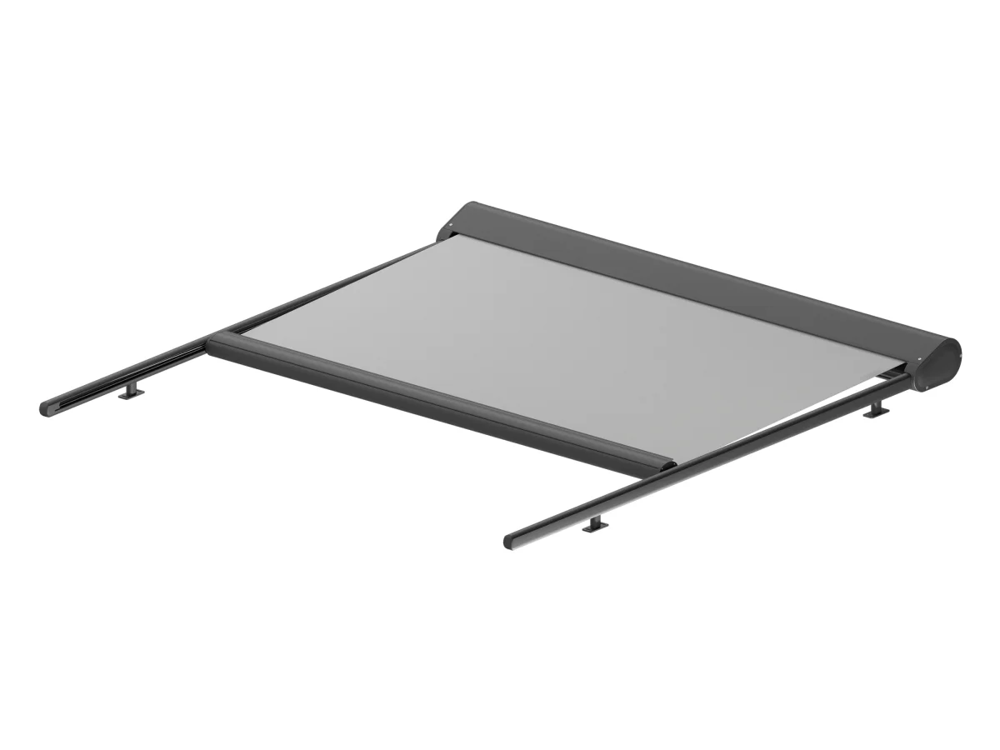

Veranda · modularni sustav
Osnovni model s jednom kasetom i ugrađenim sustavom zatezanja tkanine. Tkanina klizi po bočnim vodilicama koje se pričvršćuju uskim konzolama, pa je ugradnja moguća i na manjoj površini. Više modula može se spojiti u veći sustav, a svaki zadržava vlastite vodilice povezane zajedničkom konzolom.
- IzvedbaJedna kaseta, modularni sustav
- Maks. š × v4,5 × 5,0 m
- PogonElektrično
- UgradnjaNa krov, strop ili okomito